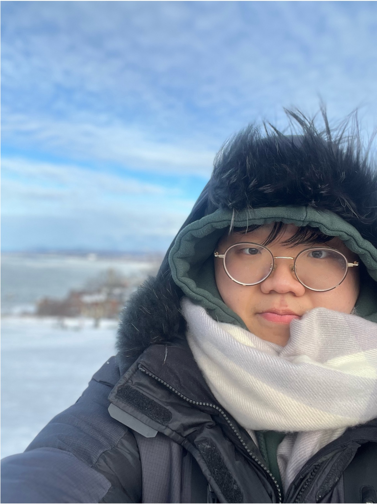

Junsung Kim 김준성
M.S. Student / Graduate Researcher
INFONET Lab, GIST
CV | Google Scholar | GitHub | LinkedIn
I'm a graduate researcher in the INFONET Lab at GIST, advised by Prof. Heung-No Lee, and will complete my M.S. in Electrical Engineering and Computer Science in February 2027. My research is on vision–language learning and visual reasoning. I have also worked on hyperspectral imaging for face anti-spoofing and identification.
My work spans both the research and the engineering behind it, from forming a hypothesis and designing the ablations that test it to building the data pipelines and distributed training needed to run them. Before GIST, I completed a double major in Software and Computer Science and in Political Science and Diplomacy at Ajou University.
Open to research scientist, research engineer & PhD positions in multimodal and vision–language AI, in Korea or abroad. M.S. expected February 2027 · Military service completed.
Contact
-
Gwangju Institute of Science and Technology, Gwangju, Republic of Korea
Education
M.S. in Electrical Engineering and Computer Science, 2025 ~ Feb 2027 (expected)
GIST, Gwangju · Korean Government Scholarship
B.S. in Software and Computer Science & B.A. in Political Science and Diplomacy (double major), 2019 ~ 2025
Ajou University, Suwon
Recent News 🎉
- [2026] 🎉 Our paper on retrieval-augmented interpretation of Korean Minhwa folk art was accepted to the ORACLE Workshop at EMNLP 2026!
- [Feb 2026] Three papers at the KICS Winter Conference 2026, including my first-author paper on hyperspectral face anti-spoofing with a CNN-MoE.
- [Apr 2025] 🏆 2nd place at the AI Agent & Blockchain Innovation Challenge (The Academic Frontier 2025).
- [2025] 🎓 Started my M.S. at GIST with a Korean Government Scholarship.
Research Experiences
- Graduate Researcher, INFONET Lab, GIST (2025 – present)
Advisor: Prof. Heung-No Lee · Vision–language models, mixture-of-experts, hyperspectral imaging, LLM reasoning benchmarks
Publications
My part summarizes my own contribution. To add a thumbnail, put an image next to
index.html and add <div class="img"><img src="fig.png" alt=""></div> as the first child of a paper's <li>.
Under review
Beyond Answer Preservation: Scientific Evidence Minimization for Private LLM Reasoning
ICLR 2027 (under review)
My part Dataset construction for the benchmark (160 workflows and 800 tasks across four domains), feedback on the method, and review of the manuscript's reasoning.
Workshop
Retrieval-Augmented Generation for Symbolic Folk-Art Interpretation: Comparing Dense and Graph-Based Retrieval Using Korean Minhwa
ORACLE Workshop @ EMNLP 2026
My part Experiments and evaluation (dense vs. graph-based retrieval), plus writing and review of the paper.
Domestic conference
An HSI-based CNN-MoE Framework for Face Anti-Spoofing and Identification
KICS Winter Conference 2026, pp. 204–205
VGG-style CNN with a sparsely gated top-k mixture of four experts, trained jointly for 4-class spoof detection and ArcFace identity recognition on 4,374 hyperspectral images of 54 subjects (single run, seed 43):
CNN CNN-MoE ACER ↓ 48.8% 6.5% 4-class acc. ↑ 82.8% 93.7% ID acc. ↑ 73.8% 75.9% My part Led the model design, implementation, experiments, and writing.
[ code ]
AI-Assisted Dataset Creation Pipeline for Korean Minhwa
KICS Winter Conference 2026, pp. 1596–1597
A Prompt-Based Pipeline for Generative Game Asset Synthesis and Evaluation
KICS Winter Conference 2026, pp. 1604–1605
Projects
InteractSeg: Bilinear Interaction Learning for Material Segmentation
Final project, Computer Vision · GIST, 2026
Per-pixel material segmentation on MINC and OpenSurfaces with a ViT-S + ResNet-34 dual encoder and mixture-of-experts modules, benchmarked against nine baselines (U-Net through SegFormer) with deterministic, three-seed training.
My part Model design, training and evaluation code, baseline and main experiments, report and presentation.
[ code ]
Compressive-Sensing Spectrometer
Reconstructs spectra from 36 filter measurements with L1-regularized non-negative least squares, designs wideband infrared cut-off filters with the transfer-matrix method, and compares experimental and theoretical transmission, reflection, and absorption.
[ code ]
Awards & Activities
Awards & Honors
- [2025 – present] Korean Government Scholarship — full tuition and stipend for graduate study
- [Apr 2025] 2nd Place, AI Agent & Blockchain Innovation Challenge, The Academic Frontier 2025 — Planisphere, a decentralized platform for AI-agent prediction competitions (I wrote the proposal, slides, and pitch)
Service & Leadership
- [Mar 2025 – present] Knowledge-sharing volunteer, GIST PIUM — science education and mentoring for school students
- [Sep 2024] Organizer and speaker, AI Nights, Ajou University — talk on K-means and DBSCAN
- [Jul – Sep 2024] Team leader, Daesin-Learning ML/DL study group, Ajou University
- [Feb 2021 – Nov 2022] Military service (completed), National Election Commission — administrative assistant
Technical Skills
- Modeling: Python, PyTorch, Hugging Face Transformers, PEFT (LoRA), timm, torchvision, segmentation_models_pytorch
- Training at scale: Multi-GPU A100 training with torchrun, DeepSpeed, FSDP; BF16; deterministic seeded pipelines
- Data & analysis: OpenCV, NumPy, SciPy, Matplotlib; dataset construction and preprocessing
- Environment: Linux, Docker, Conda, Git, shell · Languages: Korean (native), English